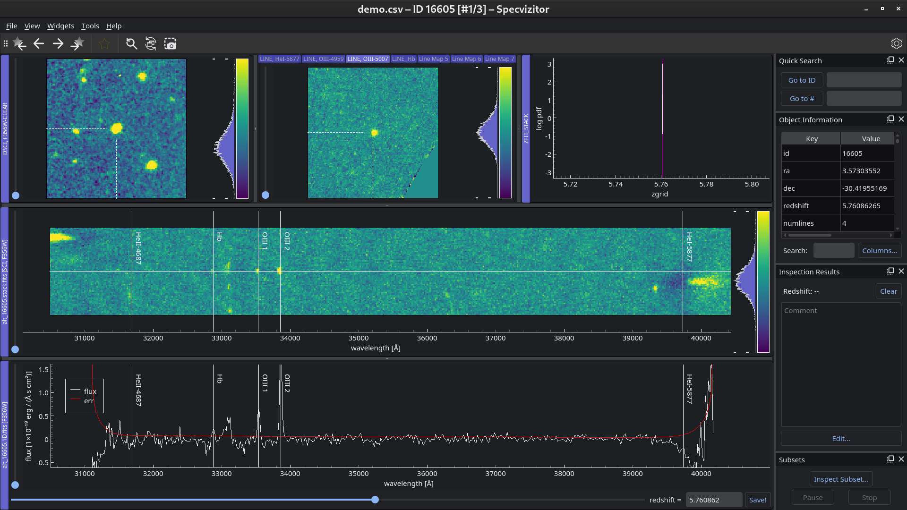
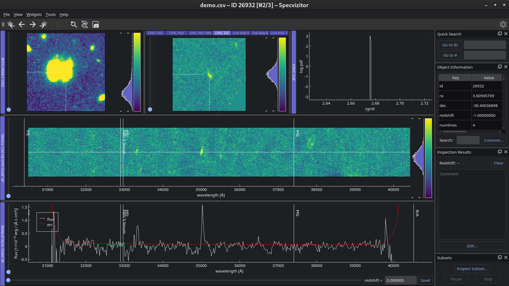

Python >=3.10, <3.12 is required to run specvizitor. If you have an older version of Python installed in your system, you can use conda to create a virtual environment with Python version 3.10+.
Install the latest version of specvizitor using pip:
>>pipinstallspecvizitor
If you wish to install specvizitor from source, refer to the Installing from source section.
This tutorial shows how to do inspections of Grizli data products. Detailed instructions on how to inspect other types of spectroscopic datasets in specvizitor can be found in the User Guide.
In this demo, we will be using data produced by Grizli for the JWST Cycle 2 program “ALT”.
Download the data as a ZIP file from here (total size: 25.5 MB).
Unzip the archive and navigate to the directory where the files have been extracted to:
Navigate to File ‣ New… and select Create a new catalog:
Click OK. You should now see the data produced by Grizli for the first out of three galaxies included in this demo:

Below is the description of what is shown in the data viewer.
Top row, left to right: an image cutout in the F356W filter (the filter used in the NIRCam/grism observations), a series of emission line maps, and a redshift probability distribution function (z-PDF);
Middle row: a stacked 2D spectrum of all exposures;
Bottom row: a 1D spectrum.
Find the redshift that best describes the data by interacting with the slider at the bottom of the window:
This galaxy is an OIII-emitter at z ≈ 5.75!
Save the redshift by pressing Ctrl+S or by clicking Save! next to the redshift slider. The saved value should appear in Inspection Results:

Go to the next object by pressing → and repeat steps 5 & 6:
This galaxy is most likely a SIII-emitter at z ≈ 2.67.
Go to the last object by pressing → one more time:
The 2D spectrum shows only a single emission line, therefore we cannot classify this galaxy. However, we can load a catalog to check the redshift suggested by Grizli (see the next step).
Navigate to Tools ‣ Settings ‣ Catalogue and specify the path to the catalog that was shared together with other data files (catalog.fits):
Click OK. We can see that Grizli suggests that this galaxy is an Halpha-emitter at z ≈ 4.31, which seems very plausible:
Save the redshift of the final object and close the window.
Finally, check the contents of the output file (also known as the inspection file) created by specvizitor:
To update specvizitor to the latest version, run the following command:
>>pipinstallspecvizitor-U
Tip
If you see error messages after installing the update, try to run specvizitor with the --purge option: specvizitor--purge. Note, however, that this action will completely erase application settings, including custom widget configurations. If “purging” specvizitor does not help, refer to the Troubleshooting section.